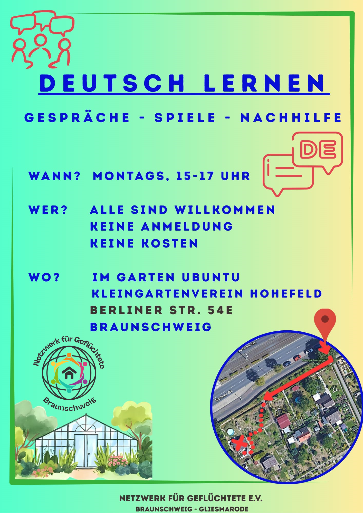
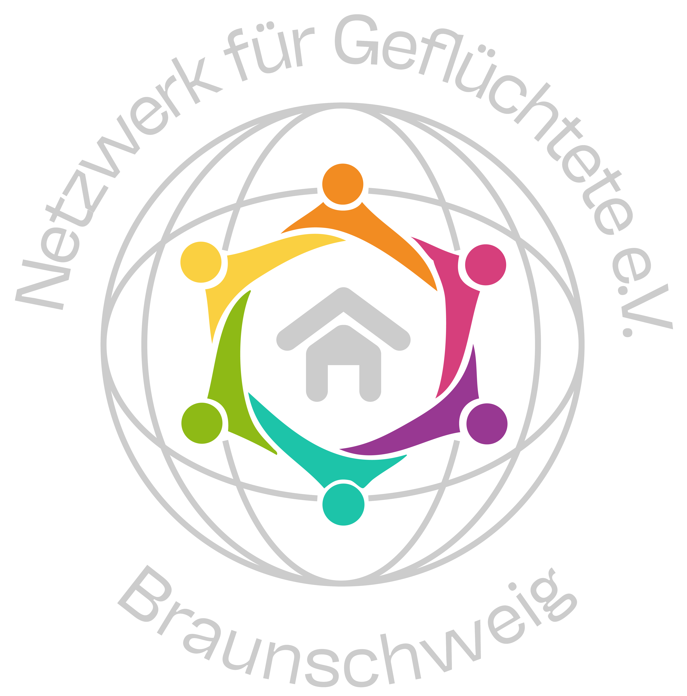
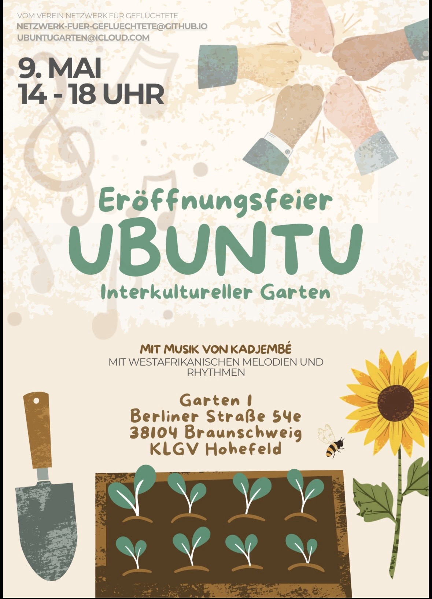

Ab jetzt: Deutsch lernen im Garten Ubuntu
Gepostet am 10. Juni 2026 · von Sabine (Vorstand)
Ab jetzt gibt es die Möglichkeit, im Garten Ubuntu (Kleingartenverein Hohefeld, Berliner Str. 54E) Deutsch zu lernen!


Ab jetzt gibt es die Möglichkeit, im Garten Ubuntu (Kleingartenverein Hohefeld, Berliner Str. 54E) Deutsch zu lernen!

Ihr seid herzlich zur Eröffnungsfeier im Ubuntu-Garten eingeladen!

Am 1. April 2026 findet unsere erste Mitgliederversammlung statt. Über interessierte Gäste würden wir uns sehr freuen. Start ist um 18:30 am Wohnstandort im Hungerkamp 2.
Mach mit bei unseren wöchentlichen Gartentagen, gemeinsamen Ernten oder hilf uns bei unseren Workshops. Vorkenntnisse sind nicht nötig – Hauptsache, du bist neugierig und scheust dich nicht davor, dir die Hände schmutzig zu machen.
Im Garten besteht außerdem die Möglichkeit, Hilfe beim Deutsch lernen zu erhalten. Mehr dazu im Infoflyer.
Bei uns ist jede/r, auch gern mit eigenen Ideen, willkommen.
Wir freuen uns über jedes neue Mitglied! Unsere Satzung sowie die Beitrittserklärung findest Du hier:
Über Spenden freuen wir uns! Unsere Bankverbindung lautet:
Netzwerk für Geflüchtete e.V.
IBAN DE22 2505 0000 0202 5610 15
BIC NOLADE2HXXX
Braunschweigische Landessparkasse
Bei Fragen oder Anregungen kannst Du uns unter ubuntugarten[at]icloud.com erreichen.